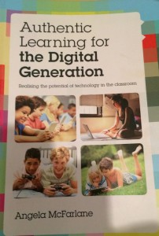

Selected Newsletter
News | Diary | Newsletter | Newsletter Archive | Seminars
19 November 2014
November 2014 Autumn Newsletter
Autumn news
In England now we have embraced the American ‘Trick and Treat’ customs of Halloween to herald winter. But the weather has been unseasonal again: this year witches were seen swimming in the sea and eating ice-cream – the warmest Halloween on record.
But neither swimming or ice cream eating require digital assistance so I had better start our Autumn newsletter. Read below about the latest thinking of our members and associates in technology enhanced learning.
Professor Christina Preston, MirandaNet Fellowship founder
Contents
- Congratulations to new Fellows
- Research with associates: GroupCall, IRIS Connect
- MirandaNet seminars at BETT15
- A MirandaNet chapter in Pakistan
- Miranda at the House of Lords
- Challenges of 21st century knowledge management
- EU MOOCs:Learning Design Challenge, Move-It-Online
- EU MOOCs: Hands On ICT, third pilot
- Open and copyright free resources for schools
- Book reviews
- Miranda at the BERA conference
Congratulations to new Fellows
Many congratulations to two members who have written articles and case studies for our global readership: David Fuller and Fenny Amalo. As I have mentioned we have more than 6,000 unique visitors a month who read up to eleven pages. Educators must be hungry for reliable information about technology enhanced learning as the numbers are growing at 12% a year. All Fellows and Senior Fellows receive a certificate and a badge to put on their email signature. The new website we are designing for 2015 will make members’ publications more prominent so why not send one in soon? It is an excellent opportunity for students to begin publishing for example like Fenny Amalo below:
The openness of MOOCs and how it influences learners’ study experience: a Phenomenographic Approach: Fenny Amalo
Fenny Amalo says: I was, until recently, a Masters student at the London Knowledge Lab, from Indonesia, with research interest in online learning experience and collaborative learning in an online environment. I come from Journalism background and have been a reporter/freelance writer, interpreter/translator and editor until 2007, before I switched to teaching. I taught primary levels English and Mathematics in Indonesia, and lectured at the Faculty of Economics (Tourism and Leisure Management Studies), Petra Christian University, Indonesia, until 2012. In 2012 I received a scholarship to pursue a Master’s degree in Europe, under the Erasmus Mundus scholarship scheme. I am currently an education consultant for Indonesian students planning to pursue higher education in the U.K., the USA and Australia. My research on MOOCs aims to gather personal experiences of learners, in how they view the online learning in terms of design, engagement, ease versus difficulties, in order to understand how online learning approach is experienced and how it can be made better or more effective for both providers and learners. Using a phenomenographic approach, the study asked questions from the frameworks of open access, open learning, and open resources, and link them with the extent of elements of “openness” in MOOCs in influencing students’ motivation and/or decision to complete courses. Grounded in theories of Lave-Wenger’s Community of Practice and Siemens/Downes’ Connectivism, the study found that learners proceeded to complete courses because they are motivated in learning, regardless of issues in learning environment/design, difficulties and similar barriers. On the other side of the story, many learners did not complete the courses, but believed that it was a positive learning experience altogether, in retrospect.
You can click into her presentation here: MOOCs Presentation
Fenny Amalo: flymonanea@live.com
Pop up classroom – Keeping things simple with tablets
David Fuller, Tablet Academy, becomes a Senior Fellow, with his latest publication. His case study on tablets comes to conclusions that show the value of his experience in knowing what to concentrate on: many mistakes have been made by trying to do too much. Here are just two of his wise ten conclusions that are clearly written with teachers in mind:
- Keep things simple – until people find their feet, always an essential element to bear in mind. When initially planning this project the original idea was to use lots of apps and do some really exciting things with tablets. What the teachers really wanted was a simpler approach, and so what you originally plan to do, should be halved and possibly reduced again to find that perfect balance, between success or trying to do much!!
- Make use of the creative apps rather then get into an app frenzy. So Book Creator, Strip Design (Comic Life), iMovie Trailers are the early keys to success. Get to use these effectively and they are enough to transform what you do. Then move onto others.
You can read the full study: David Fuller
Free tablets
David is now a trainer at Tablet Academy who are MirandaNet associates. He is announcing the Microsoft Showcase Classroom Regional Roadshow for 2014-15. Delegates will be issued with a new Toshiba 8” tablet running FULL Windows 8.1 (not RT) to keep after the event. Schools leaders from UK state and independent schools are eligible to join an immersive hand-on session in order for them to appreciate what the Window Tablet platform has to offer in a school. Full information and booking forms are available on the following website here.
Research with associates
GroupCall research
MirandaNet Fellows have just published their research into the impact of the Groupcall suite of products that included tools for mobile registration, for communication between home and school and to alert teachers and parents to bullying. First the Fellows explored the existing research about how digital communications help to bridge the gap between home and school. The findings about the most significant impact on learning achievement were dependent on good relationships between teachers, parents and pupils. In particular, the confidence of parents in the school increased when they were receiving regular communications on their smartphones. The impact of the products depended on teachers working within the home context.
Four categories were established as relevant:
- the socio-economic status of the family;
- the parents’ awareness about the impact of the media;
- the style of parenting that is prevalent;
- the availability of home–school digital links.
For more details about the existing research and new details about saving teachers’ time for more productive tasks you can read more here.
Powerful professional development

On September 26th at the What the Research Says seminar at the London Knowledge Lab, Professor Christina Preston, Founder of MirandaNet and Graham Newell, Director at IRIS Connect and MirandaNet associate presented the key findings of this partnership research so far: Powerful CPD through video and web based tools. IRIS Connect is a collaborative CPD tool that enables teachers to reflect on, analyse and share teaching practice. The web based video allows them to see what actually works so they can use this to improve outcomes for pupils and put the teacher at the centre of CPD and school improvement by empowering them to develop their own practice and that of their colleagues. But the point is that teachers own the video and can decide who can annotate and comment.
The teachers explained that the benefits of the system became clear because in terms of impact on teaching skills, 94% of the teachers thought that using IRIS Connect to reflect on their practice had ‘positive’ or ‘very positive’ impact: 63% that their Ofsted grade would improve in the future by one or more.
Secondly, teachers’ self confidence and sense of empowerment improved as they used the web-based video system. In particular, 88% felt their confidence as a teacher had risen, and 96% felt they would be more likely to try new practices or be experimental in their approach to teaching. Even more conclusively, 99% felt they were taking more responsibility for their own professional development.
Thirdly, the sense of collaborative learning and the building of professional networks grew. In detail, 83% considered there had been a positive impact on collaboration between colleagues; 85% of the respondents felt there had been a positive impact on collaborative practice within the school itself; 19% had started to use the system to share with colleagues in other schools and, conclusively, 99% felt there were more conversations between teachers about teaching.
Lastly, the teachers were asked if they perceived an improvement in pupil performance and behaviour as a direct result of their own improved practice. This was a difficult question to answer at this early stage in adoption but, even so, 53% of teachers considered that improvements in pupil outcome were already evident. We will soon be into a next phase to explore these ideas in more depth.
MirandaNet is applying for an EU Erasmus Plus grant with our associates IRIS Connect on the basis of the first stage of our research into their blend of web based platform and versatile video camera systems. For more details about the research click here.
IRIS also maintain an interesting blog that keeps me up with events and other general information. You can read it here.
BETT15 21-24 January
MirandaNet will be doing two seminars at BETT on Wednesday 21st January.
Free professional development in ICT:
Christina Preston and Sarah Younie: MirandaNet Fellowship Date: Wednesday 21st January Time: 10:00 – 10:45 Location: Schools Learn Live: Primary and Secondary theatre
The benefits for ICT teachers in joining a MOOC:
Sarah Younie and Patricia Charlton: MirandaNet Fellowship
Date: Wednesday 21st February January
Time: 11:30 – 12:15
Location: Learn Live: HE Learning Value and the Future Workforce FE
BETT15 is at the Excel Centre in East London.
Travel details are here.
A MirandaNet chapter in Pakistan
“Many thanks to MirandaNetters, Lawrence Williams and Allison Allen who helped to ensure that Lubna Bashir Malik enjoyed a full programme of school visits and workshops when she visited England in October. Lubna, an Educational Technology Trainer from the City School System in Lahore, Pakistan, enjoyed her experience. This was a great learning experience for me to take back to Pakistan where using technology in education creates a buzz. I feel interacting with different learning communities not only helps us to exchange ideas but it also brings us nearer to sharing thinking patterns. I learnt much from the What the Research Says session at the London Knowledge Lab about the potential and impact of Technology Enhanced Learning(TEL) and about the potential of partnerships between practitioners, industry and the research community. Although teachers are the main force in creating a meaningful learning environment I realised that building a social capital network will enable them not only to keep pace with the change but also to be the source of change. The second session at the LKL about planning lessons and courses with pedagogy in mind opened a wide array of perspectives within my own context and for the education in Pakistan also.
The Learning Designer tool developed by Professor Laurillard can be used in Pakistan as well to gauge the effective impact of taking teaching and learning online, through fruitful discussion. The ‘AHA’ moments were amazing as the ideas floated were encouraged and accepted. I have now joined the Learning Designer Third Challenge so that I can learn more. I was impressed to see the role of MirandaNetters in TEL education. My wish is to spread this. We could find this educational boost though our community in Pakistan as well so I am planning to set up a MirandaNet chapter. I hope Pakistanis who are already members of MirandaNet will get in touch with me to make this dream a reality. I look forward to hearing from you.
Lubna Qais: qaislubna@yahoo.com
You can read more about the Learning Designer Challenge in an item below.
Policy matters
Miranda attending the House of Lords
MirandaNet extends well-deserved congratulations to Professor Margaret Cox, who has many awards including Senior MirandaNet Fellow. She has just become president of the National Conference of University Professors (NCUP). On 30th September MirandaNetters were warmly invited by Prof Cox to attend an NCUP Reception at the House of Lords hosted by the Right Honourable Baroness Blackstone.
Dr Sarah Younie, Reader, who represented DMU and MirandaNet reported on the focus on the qualifications required to enter UK higher education. “A key issue was the fact that the UK universities have a prevailing preference for three A-levels which are the traditional exam taken at eighteen. Many felt that this preference perpetuates the so-called ‘gold standard’, which led to a debate about how universities could widen their routes into higher education. It was considered that schools were unlikely to broaden out from A-levels while universities continued to recruit to this qualification pattern. This led onto a discussion about vocationalism and how educators can generate different routes into higher education that universities will seriously engage with. The debate developed to consider issues of diversity and how is it possible to get greater representation of black and minority ethnic students in higher education”. Terry Freedman who is a MirandaNet Fellow reported on his visit from a more personal point of view. “One of the worst things you can do, in my opinion, is write someone off academically on the basis of their achievements so far. It’s an easy way out – far easier than being imaginative and looking at things in a different way. These thoughts were prompted by a visit to a NCUP event at the House of Lords on 30th September….In the debate we heard that UK universities not only have a preference for students to have three A-levels, but to have them in particular subjects at particular (high) grades. Nothing new in this, of course, except that what struck me was the inflexibility of the system as it seems to be now. It’s always dangerous to use one’s own experience as an example, but I’ll do it anyway. Read more.
Terry’s lively ICT in Education website is updated frequently with articles of interest to teachers and others involved in educational ICT and Computing.
Challenges of 21st century knowledge management
At this BERA presentation in September MirandaNetters, Leask, Younie and Preston were three of the nine authors who drew attention to Barber and Mourshed research (2007), ‘Education reform is top of the agenda of almost every country in the world. Yet despite massive increases in spending and ambitious attempts at reform, the performance of many school systems has barely improved in decades’. The authors who are global partners in the MESH (Mobilising, Managing and Mapping Educational Specialist knowhow) initiative contended that this lack of research based professional knowledge on subject specialist issues is further compounded by the fact that research published in journals is not generally designed around questions teachers want answered. In short, the knowledge that is produced and the management of it within the education sector are woefully lacking systemic organisation and coherence. If teacher quality, rather than level of funding, is the most critical factor in improving educational outcomes, then why is so little attention drawn to the knowledge and evidence base available to support teachers in improving the quality of their professional knowledge? Read more…
Practice matters
Move-It-Online MOOC: International Learning Design Challenge
The London Knowledge Lab, Institute of Education, have just become partners in the EU HandsOn ICT project The London Knowledge Lab, Institute of Education, have just become partners in the EU HandsOn ICT project with MirandaNet and partners in Catalonia, Greece, Slovenia and The Netherlands. As a result two EU events have been held at LKL; on the 26th September, Sarah Younie and Christina Preston demonstrated the EU Handson ICT software to the participants at the What the Research Says seminar; on 16th October, in preparation for the third pilot of the project Dr Patricia Charlton held a workshop to introduce MirandaNetters and other international participants to the lesson planning software, Learning Designer, that is being used in one of the modules of the EU HandsOn ICT third pilot, Move-It-Online. The aim of Learning Designer is to provide ways of describing and sharing most effective teaching ideas, especially those that illustrate ‘pedagogically purposeful uses of technology for learning’. In the workshop participants learn how to use this simple web interface that enables the user to browse learning designs for selected learning outcomes, topics and activities. It is possible to search for designs, review designs and adapt designs and create your own design.
A core focus was the design of learning design activities with a particular focus on teaching and using ICT in particular teaching ICT in a broad sense e.g. digital literacies, IT, Computer Science and e-safety. in addition there were opportunities for the participants to comment on the CRAM tool as well which helps in identifying the hidden costs of online learning, to make suggestions for changes, critique existing designs, and develop their own designs and experiment with resources and cost modelling when moving from face-to-face to online teaching. This MOOC is led by Professor Diana Laurillard and her team, in collaboration with Building Community Knowledge, MirandaNet, Creative Digital Solutions and Hands-ON ICT project.
Learning Designer is based on Professor Diana Laurillard’s research into effective teaching and learning over many years. The two key books, Rethinking University Teaching: A Conversational Framework for the Effective Use of Learning Technologies and Teaching as a Design Science: Building Pedagogical Patterns for Learning and Technology can both be bought on Amazon.
You can read more about Learning Designer here.
EU MOOC: HandsOn ICT third pilot.
MirandaNet have been partners in the EU HandsOn ICT project since 2013. The four members of the team are Theo Kuechel Ian Lynch, Christina Preston and Sarah Younie. All the details are on the blog including the presentations that we made in the summer at the MakeLearn and the MoodleMoot conferences in June in Slovenia and Key Competencies in Informatics and ICT (KEYCIT) in Potsdam, Germany.
The third pilot in Canvas is very ambitious. More than 2200 participants from 120 different countries have registered. As a result of feedback this module is being offered in 7 languages in parallel: Catalonian, English, French, Greek, Slovenian and Spanish. Also Bulgarian thanks to the OUNL partner and Sofia University, which is a key Associate Partner and contributes to the project by disseminating the MOOC among its contacts and staff but also by providing participants and facilitators for the Bulgarian group. Associate partners are organizations that are not part of the Consortium but contribute in some way to the project through dissemination, technologies, running pilots and so on.
You can join this MOOC here.
Open and copyright free content for schools
Theo Kuechel has been sharing his work on mirandaLink about The Open Content Toolkit, a gateway to both contemporary and historical open digital media content from media archives and collections around the world. It includes links to resources, exemplars of how open digital content might be used in schools and links to resources for in depth study. It has been set up as a collaborative space to explore, discuss and share examples of the use of open media at all school stages and at all levels of education. It is intended to be a truly cross curricular resource. The toolkit is free and open to all with an interest in open resources, media archives, education and the digital humanities. Theo says. “Of course it is far from complete, there are lots of loose ends and improvements to be made - in fact, being in a wiki format it is dependent on folk joining, contributing and sharing”. Join the community here by clicking the join button and using the invite code: M9KCCKT
Book reviews
Four important books have been published over the last few months which indicates what a vibrant area technology enhanced learning remains; in alphabetical on the authors’ surname here are the new books on technology enhanced learning that we heartily recommend.
Digital Media and Learner Identity: John Potter
John who now works at the Institute of Education, University of London was one of the founder members of MirandaNet and has influenced our vision. His book is one of a series that, focusing on local and global perspectives, responds to the shifting demands and expectations of educational stakeholders, the ways new technologies are actually being used in different educational and cultural contexts, and examines the opportunities and challenges that lie behind the myths and rhetoric of digital age education.
The key is that a new practice of curatorship has been defined that the networked public are comfortable adopting. John explains that curating suggests not just writing or producing but also collecting, distributing, assembling, disassembling , and moving media artifacts and content across different stages; all of which are potential activities in new media production from posting your status in a social networking site through to making a short clip, sharing an online gallery, or any number of other activities. Curating is about knowing how the different forms you are working with work together to make meaning intertextually and for which purposes and audiences they are successful. Ultimately one of the contentions in the book is that active, agentive curatorship of media resources in production is a new literacy practice.
An excellent writer, John describes innovative ideas not only with clarity and intelligence but with a particular skill in linking anecdotes to concepts. I particularly enjoyed the introduction where he reflects on clearing the house of an aunt who had never been online. The section on Personal Contexts for Thinking about the New Curatorship traces in a similar way how he had developed an interest in issues of representation through other experiences with his children as they grew up and then in his extensive research in schools. The series editors, Michael Thomas, James P. Gee, John G. Palfrey, well-known in the field, are clearly impressed, saying that “this original and fascinating work presents a strong evidence-based engagement with the themes of curatorship and the “learner-as-producer” and creator of digital content. In his groundbreaking discussion of children’s use of video in UK primary schools, Potter demonstrates how digital media can be a powerful tool with which young children can create, disseminate, and learn to understand their multicultural identity in new and compelling ways. Indeed, the autobiographical videos provide numerous insights into the multilayered process of making and unmaking digital identities from both technological and cultural perspectives. The concept of the “new curatorship” is both timely and provocative and should prove valuable given the increasing focus on digital media literacy in the school sector worldwide.”
John is typical of MirandaNet members who joined as classroom teachers and stay with us although they progress to being advisors and university teach educators. It is exciting that John is now the creator of a new media term: curatorship. But he now asks how this new contemporary cultural and literacy practice will be valued in learning.
You can buy the book published by Palgrave here.
Authentic Learning for the Digital Generation
Angela McFarlane
This book is essential reading for those who want a long-term perspective on the real value of digital technologies in learning regardless of the latest fad. Angela McFarlane has been involved in research in this area since the1990s: yet when she came to revisit the book that she had written in 1997 about digital technologies in education, she found that many of the fundamentals had not changed. In conversations with professionals today she found that not only had conditions in the classroom remained fairly constant but also policy discussions were much the same – why aren’t teachers using technology more, learners use more outside school, should be changing the way we teach or doing the same things possibly faster? As a result she claims that many of the fundamental research findings of the last two decades including her own remains relevant over time even though the technology has changed.
A professional who want to plan a curriculum or just a topic will find this comprehensive text offers perspectives on the policy and pedagogy that should underpin a school development plan. Angela covers the digital learning landscape including the use of personal devices, games and play, thinking about writing and manipulating data and seeing patterns. She considers web spaces from a balanced viewpoint that includes opportunities to collaborate as well as e-safety and the potential for including parents in the learning process. The impact of user-generated content on a learners’ sense of identity is considered.
The arguments are balanced and knowledgeable whilst still accessible. She is at her most persuasive in the first and last chapters where she provides an overview of the digital landscape as it has developed over nearly twenty years. Her most pertinent points are about the restrictions of high stakes exams that do not value the collaborative learning opportunities that are growing as technology becomes more sophisticated. Important questions are raised about in the ways in which the internet challenges the notion of what it means to be well educated. But in contrast to the techno-romantic, Angela is confident enough to assert that in some learning situations it might be best to turn off the technology and talk to each other.
You can buy the book here.
Introducing Computing: a guide for teachers, Lawrence Williams
Since the “disapplication” of the ICT programmes of study by the Secretary of State for Education in 2012, Lawrence Williams, a teacher educator in Literacy, ICT, and Computing, has worked with members of MirandaNet, Naace, ITTE, and CAS to investigate the best ways to approach the new Computing curriculum content and pedagogy. “Introducing Computing: a guide for teachers” (Routledge 2014) is the result. The book is well worth reading for the opening chapter alone. Allison Allen writes with great authority about redefining the ICT curriculum. Her key point is that excellent teachers are very concerned about the apparently new terminology and skills they need for coding and programming, whereas much of this was already stipulated in the previous ICT curriculum. This anxiety is overshadowing the opportunities to explore the innovative pedagogy that Allison describes in great detail, grounded in classroom cameos, and referenced with quotations.
Mirka Cernochová, who has been developing an on-going exchange project with Lawrence, in England, and the Charles University in the Czech Republic, contributes a chapter on Philosophy and Computing that reminds us of the constructive value that was found in the early days of Seymour Papert’s Logo that began the movement to teach computational thinking and algorithms. It provides a valuable, non-political foundation for the teaching of Computing in our schools. There are valuable reference lists, web resources, and a glossary that practitioners and students will find useful in this field that is new to many.
The centre of the book concentrates on the creative use of Scratch from KS1 to KS3 by trainee teachers, together with pupils in West London under Lawrence’s guidance, and in Prague, Czech Republic through Mirka’s work. This project, that primarily develops computer coding skills, has been at the core of Lawrence’s extensive cross-curricular initiative, “Literacy from Scratch”, that has an associated website here. In the book, and on the website, the whole process of learning Computing is demonstrated with a cross-curricular emphasis on literacy, art, and music. Lawrence has also curated resources by children (from age 5) who are leading the way. The Literacy from Scratch model is designed to develop narrative and literacy alongside computational thinking skills. Creativity is a core element of the project described from KS1 to KS3, where pupils use the Scratch programme to create narrative, characters, artwork, and music.
Finally, Mark Dorling introduces the topic of understanding computer networks in the primary school, and Nic Crowe and Rosie Hussain explain the value of games in systematic thinking, and complex decision-making processes, that are important aspects of computational thinking, and which point a way to the future. Lawrence’s fundamental belief is that cross-curricular work, which was largely dropped from primary schools when the National Curriculum was originally introduced, can now, through the Computing curriculum, provide a radical new opportunity to bring back creativity, collaborative work, and cross-curricular projects into the curriculum. The authors he has assembled to write the chapters, all of whom are current or former classroom practitioners certainly bring these ideas to life. It is pleasing to read a book about teaching Computing that bubbles with enthusiasm, and will inspire teachers from KS1-KS3.
Lawrence’s book published by Routledge can be found here.
Teaching and Learning with ICT in the Primary School: Sarah Younie, Marilyn Leask and Kevin Burden.
This Routledge series has been a best seller in teacher education since the 1990s. The clear structure of each chapter helps the student to progress through the material with a clear idea of what they should have learnt at the end of their reading. The questions and the resources are invaluable as well. This Routledge series has been a best seller in teacher education since the 1990s. The clear structure of each chapter helps the student to progress through the material with a clear idea of what they should have learnt at the end of their reading. The questions and the resources are invaluable as well. In this new edition of one of the titles, Teaching and Learning with ICT in the Primary School, I note that the lead editor is now Sarah Younie who continues the tradition that Marilyn Leask began so well. Kevin Burden, another member, is now an editor as well bringing long-term experience in teaching in this field.
Well-networked the editors have bought together some well-known and some new experts and practitioners who cover together a range of topics across the curriculum that are too numerous to mention here in full. Some of the new trends include; Marian Henry’s attention to whether learning is changing and becoming more creative through the use of digital tools; aspects of visual literacy by Jeff Baudry; mathematics and blended learning from Michael James Malone and John O’Shea; nurturing musicians by Jon Audain; ICT and assessment by Gary Beauchamp; and e-safety by Tim Pinto and Sarah Younie. These just offer a flavour of the range of topics that will offer every student a thorough grounding in the elements of the new Computing curriculum that are as important as ever. Programming is also offered by Rory McGann and Aisling Leavy. However, in the current enthusiasm for coding across the curriculum, this book gives a wide coverage of all the other elements of the digital learning curriculum that are vital to the education of primary children.
MirandaNet in conference
BERA 2015
This year the annual research conference of the British Educational Research Association (BERA) was held from 22-25 September, at the Institute of Education, University of London. Both Professor Christina Preston and Dr Sarah Younie are involved in the international MESH (Mapping Educational Specialist knowhow) initiative, which aims to provide a multi-media online publishing strategy that enables practitioners to engage with educational research. Dr Sarah Younie presented a paper on behalf of MirandaNet, which is addressing the issue of knowledge management in education. In particular, the focus was on how research can be made accessible to practitioners. You can read a summary of this paper here.
Please send me articles and news that you would like published in the next newsletter.
[Back]